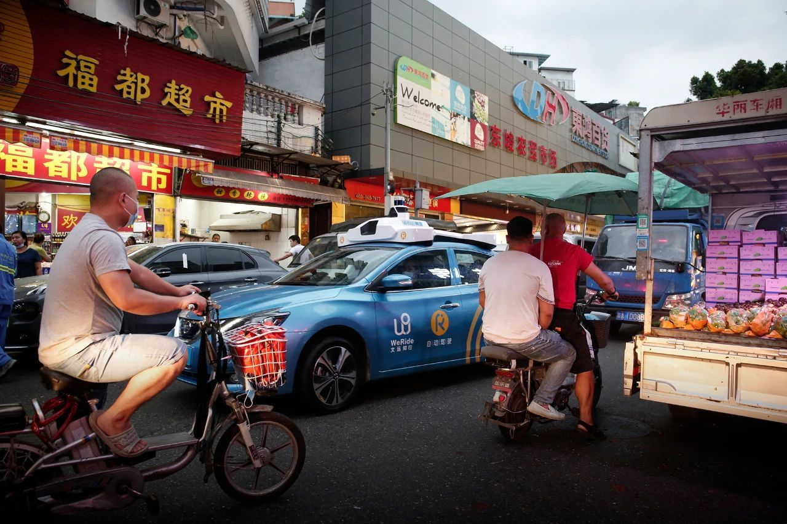
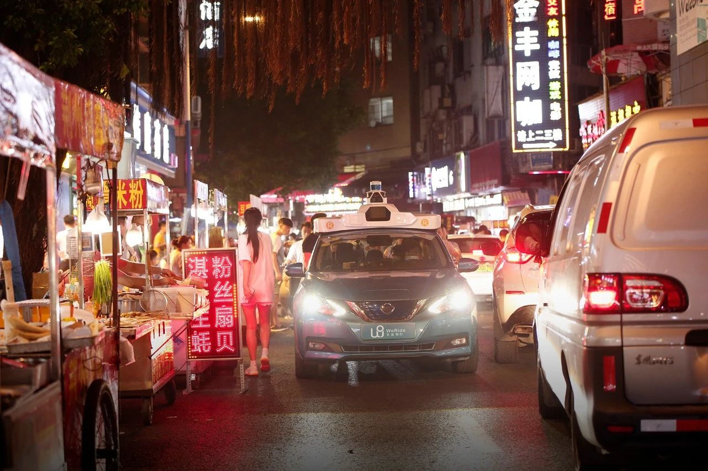
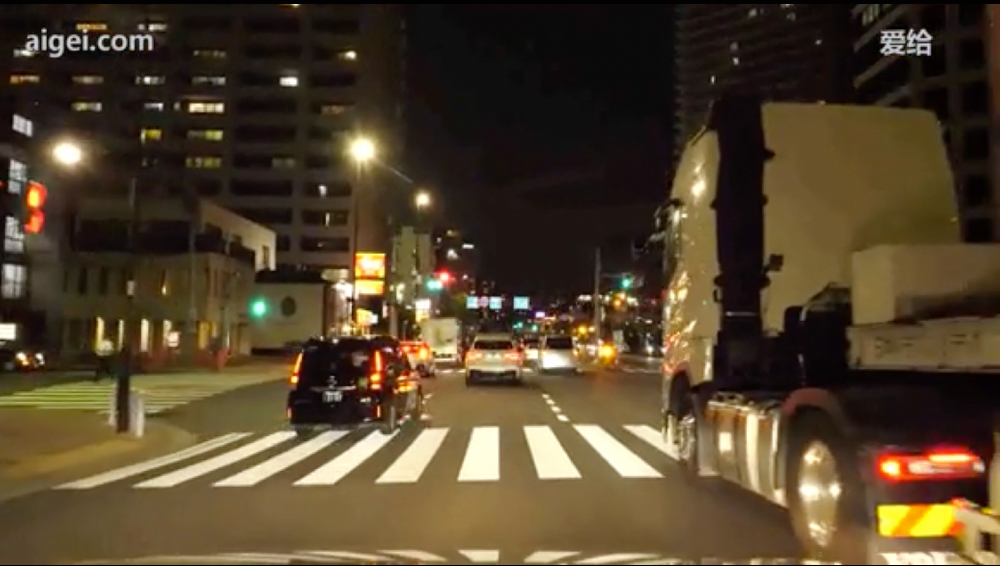
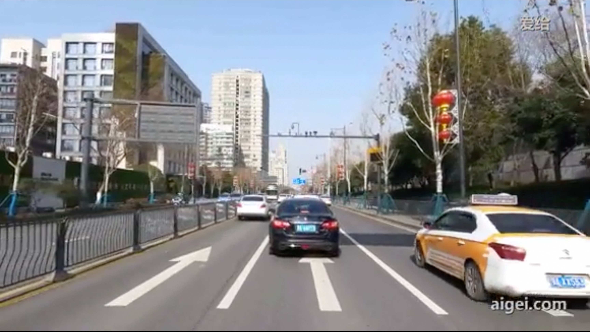

| 驾驶场景的智能理解 |
|
|  |
在驾驶拍摄的图中，街道显得相当繁忙，混杂着机动车、电动自行车和行人活动。显眼的是，一个蓝色无人的"文远知行"（WeRide）车辆在前景中，这表明自动驾驶车辆正在运行。两名电动自行车骑行者正在其周围行驶，可能会造成车道阻塞。街道上略显拥挤，表明需要谨慎驾驶，并注意机动车和非机动车辆可能会突然停车或意外移动。商店和市场摊位展示着色彩鲜艳的商品和标志，可能会吸引行人不按规定路线横穿马路，进一步复杂化交通流量。显然，左右两侧车道均有占用，左侧是停车车辆，右侧是一个展示水果或蔬菜的小店，有遮阳篷。这种设置可能会限制视野和机动空间，强调了低速导航和提高情境意识的重要性，以安全通过或预期其他驾驶者的突然变道。最后，交通信号灯或标志不可见，因此在识别下一个视觉交通信号之前，遵循典型的街道驾驶规范和预防措施至关重要。 |
|  |
在捕获的图像中，你正驾驶在一个繁忙的夜间街景中，可能是中国城市的一条街道。街道被热闹的活动所充斥，两侧是街头食品摊贩，他们用五颜六色的灯箱招牌吸引行人，提供各种美食。这表明你正在穿越一个受欢迎的夜市或美食街，这是一个常见的城市场景，要求提高警惕。多个行人和食品摊占据了路面，减少了你和其他车辆的可用空间，导致驾驶通道非常狭窄。前方的车辆看起来是一辆自动驾驶汽车，通过独特的车顶传感器阵列可以辨认出来，此外，还可以看到更多车辆在前方，这加强了对小心驾驶的需求，因为可能会遇到意外停车和缓慢行驶的情况。道路拥堵显而易见，需要耐心和对周围人类活动和附近车辆的频繁监控，以避免小型碰撞。务必保持安全但稳定的车速，以保证交通流动顺畅，并通过后视镜和视线检查看周围环境。建议使用低灯光增强可见性，同时避免让行人或紧邻的司机感到炫目，并准备好在行人突然走上道路时及时让行。鉴于这些挑战始终准备好进行紧急刹车，并时刻留意这个活跃夜景中车辆和行人混杂带来的潜在危险。 |
 |
在这张图片中，你正穿行在一个繁忙的城市街道上，周围充满了各种车辆和活动。这种场景在拥挤的城市环境中十分常见。左侧有多辆自行车，包括货运自行车，可能正在运输货物或载客。这表明非机动车辆交通量很大，需要你小心驾驶，并注意骑自行车的人可能会突然停车或转弯。在你的前方，有一辆蓝色的自动驾驶汽车，其车顶上的传感器设备很显眼，显示出与机动车同行的还有自动驾驶车辆。这样的车辆可能不会像人类司机一样表现出同样的互动驾驶行为，因此需要你格外小心，保持安全距离。在右侧，种类繁多的小型摩托车和踏板车混入交通流中，需要你保持高度警惕，因为这些车辆动作不定、加速迅速。商业场所鲜艳的广告牌和沿街行人可能分散注意力，因此专注于车辆流动并预测行人过街是非常重要的。同时，迎面而来的交通，包括如白色面包车这样的较大工具车，增加了道路的复杂性，这提醒你可能面临拥堵或需要突然躲避的情况下做好准备。在这个充满活力的城市环境中，保持适当的车速，利用后视镜关注身旁和身后的自行车和踏板车，预见自动驾驶和人工驾驶车辆的运动轨迹，都是确保顺畅安全驾驶的重要措施。
|
 |
这张图片展示了中国城市道路的典型场景，由汽车的前置摄像头捕捉，提供了一个丰富的视觉环境，强调了空间意识和谨慎驾驶的重要性。道路上交通繁忙，包括汽车、自行车和行人。在前方，有一位骑黄色自行车的骑行者位于驾驶者可能正在使用的车道上，骑行者可能会有不可预测的动作，因此存在潜在风险。在左侧，一辆白色SUV正在平行移动，提示驾驶者注意车道变换或并线动作。道路似乎在大型高架桥下过渡到一个多车道的交叉路口，需要驾驶者留意更改交通信号和可能从右侧或左侧并入的交通。清晰的标志牌表明需要遵守当地交通规则，而在右侧有一个公交车站或地铁入口。驾驶者应注意可能进入车道的行人。当前的能见度良好，但各种因素的接近性要求谨慎驾驶，以确保保持安全距离，并预判交通流的突然变化以防止事故发生。 |
 |
这张来自前置摄像头的图像展示了中国一条繁忙的城市街道，这条街主要是车辆和骑自行车的人混合使用，因此需要注意驾驶。在左侧，一排停放的自行车表明自行车在此区域很常见，这也表明需要提高对骑自行车者的注意，就像右车道旁自信骑行的自行车骑士所展示的那样。街道上有适度的交通，尤其是一辆黑色SUV接近，可能表明这是两车道交通，需要仔细协商以保持适当的车道位置。右侧人行道上停放的车辆缩小了驾驶空间，促使驾驶员小心行驶以适应迎面而来的车辆。左边的标识和店铺增加了视觉的复杂性，但也可以提供关于行人活动区域的提示。街道两旁的树木制造了阴影，这可能隐藏障碍物或行人，因此需要不断扫描环境。这个街道场景鼓励驾驶员保持警觉的驾驶态度，调整速度和位置以考虑固定和动态元素，如行人和骑自行车的人，以提高安全性和驾驶流畅性。 |
|  |
图像显示了一个夜间城市驾驶场景，多辆车辆正在通过一个繁忙的十字路口。在最右边，有一辆大型卡车，其后灯清晰可见，表明它在驾驶车辆的相邻车道中行驶。卡车的体积和接近性提示需要保持安全距离，特别是考虑到可能的盲点。在前方，有几辆车正向同一方向行驶，这表明交通流量稳定。左侧车道上有一辆黑色的车，可能正在刹车或减速，因为刹车灯亮起。这提醒司机需要准备好应对驾驶节奏的变化。在前景中有一个宽阔、清晰的斑马线，表示这是一个人行横道，需要警惕横穿的行人。十字路口有多个交通信号灯，其中一个显示红灯，提示前方可能需要停车。街道两旁的建筑物灯火通明，提供了环境照明，但也暗示了能见度较低的区域。鉴于夜间环境和城市交通，司机应保持警觉，确保适当调整速度，并合理管理车道位置，以确保安全顺畅的行驶。 |
 |
图像显示了一条城市高速公路，鉴于车道和车辆的数量，这可能是一条主要路线。你正在穿过一个高架桥下，这突显了在光线条件变化时对能见度潜在影响的关注。多车道意味着交通流动性较强，但也需要对相邻车辆保持警惕，尤其是在换道时。清晰的车道标记是保持安全行驶位置和避免意外偏离的重要指南。高速公路的路灯可见，表明你需要确保大灯调整得当，以优化可见度，同时避免晃到其他司机。由于是夜间行驶，注意控制车速非常重要，因为在黑暗条件下制动距离可能会增加。远处有几个广告牌和标志，它们可能提供速度限制或即将到来的出口等重要信息。为潜在的变化或警告做好准备。尤其在交通密度增加的情况下，保持安全的跟车距离是必要的。许多高架结构可能表明这个地区有多个进出匝道，因此要密切注意指示车道分流或合并区域的标志。最后，如果你的目的地在市区内，提前预判潜在的转弯，并确保导航设备正在积极引导你，以防止最后一刻做出决策。 |
|  |
图像展示了中国一条繁忙的城市街道，整个场景色彩鲜明且光线充足，天空晴朗，表明驾驶条件良好。前方是多车道主干道，白色车道标记和方向箭头清晰地指示了可行驶的路径。车辆位于中间车道，地上的实心白色箭头指向直行，表明这是一个指定直行的车道。在右侧，有一辆标有中文的黄白色出租车，表明路上有共用的商业车辆，可能需要频繁停靠以接送乘客。注意出租车的存在很重要，因为它们可能会突然改变速度。在前方，黑色轿车就在前面，需要保持安全的跟车距离，以应对突然停车或换道的情况。道路两侧都有坚固的金属护栏，旨在分隔人行区域或有效引导交通流。值得注意的是，在右侧的灯柱上装饰有红色灯笼，这可能会造成分心，或者表明附近有重要的地点或文化庆祝活动。背景中高耸的建筑物意味着是在一个容易出现交通高峰的城市环境，尤其是在高峰时段，所以需要持续保持警惕。同时，悬挂的交通标牌和信号灯指示驶入路口时的预期状况，需提前变道以应对变化。因此，保持警觉并监控周围环境，预计其他驾驶员的动作并遵循街道信号，将显著改善在这一城市环境中的驾驶体验。 |